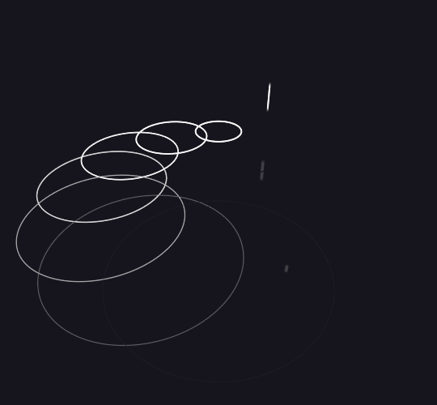
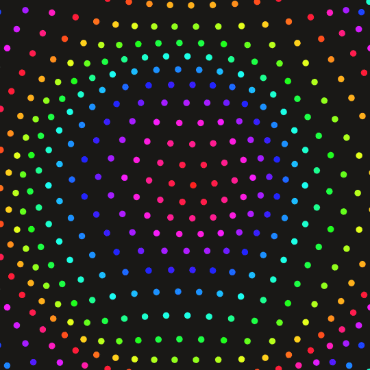
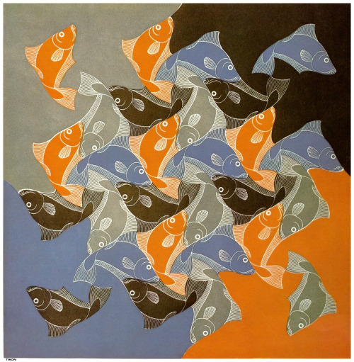

Threejs
- Rendering A teapot using threejs
- Environment mapping Reflection
- Next task
Qt, C++ Projects
- OpenGL Starfield(Github link).
- Qt OpenGL Textures(Github link).
- Qt OpenGL Cube(Github link).
- Qt NSocket(Github link).
Other Projects
- A tool for interactive Geometry Geometria.
Page under construction

